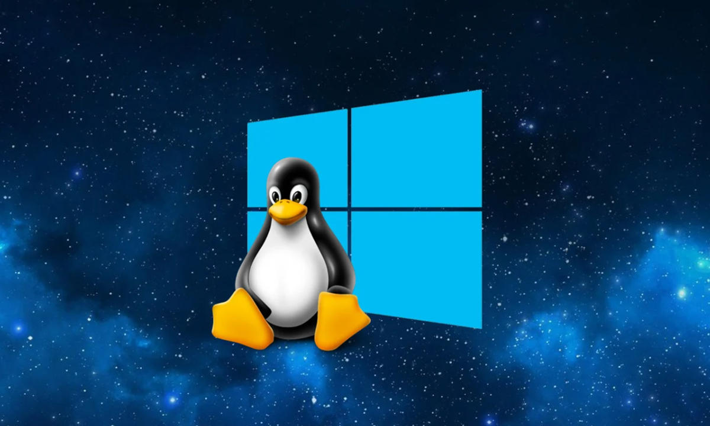

En esta página web encontrarás guías detalladas sobre cómo instalar tres sistemas operativos populares: Windows, Debian y Linux Mint. Cada sección te proporcionará instrucciones paso a paso, desde la descarga de los archivos necesarios hasta la configuración final del sistema operativo en tu computadora. Además, se incluyen imágenes y videos tutoriales para facilitar el proceso de instalación, asegurando que incluso los principiantes puedan seguir los procedimientos con facilidad.
Lo que diferencia a esta página web es su enfoque en la simplicidad y accesibilidad. Ofrece guías paso a paso con imágenes y videos tutoriales para instalar Windows, Debian y Linux Mint. Además, incluye una sección de resolución de problemas para ayudar a los usuarios a superar cualquier obstáculo durante el proceso de instalación.
